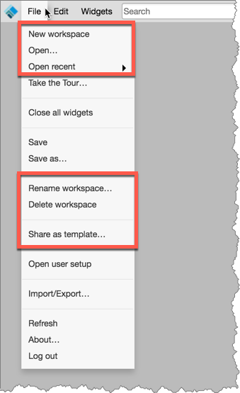
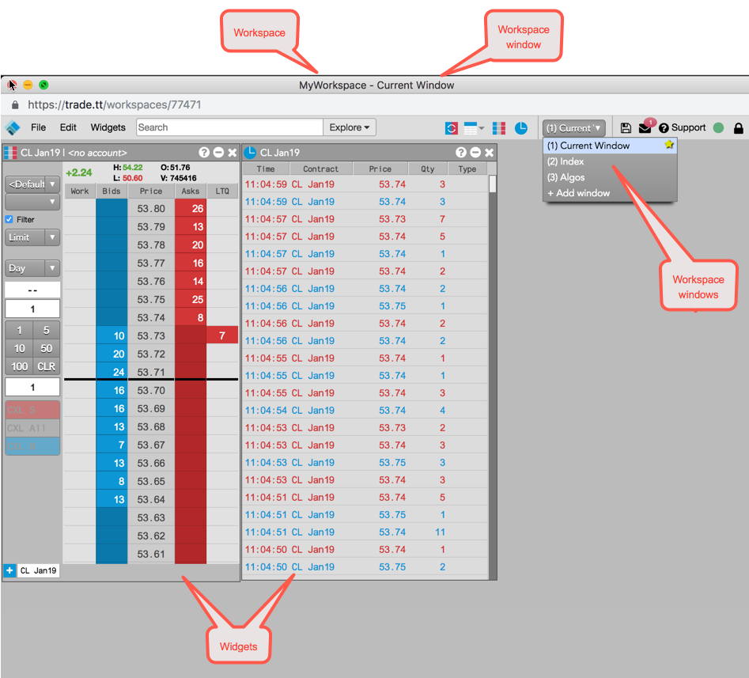
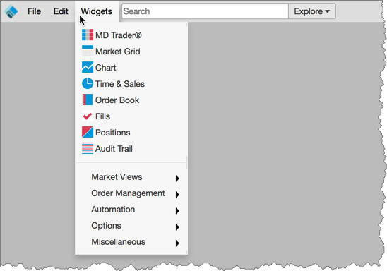
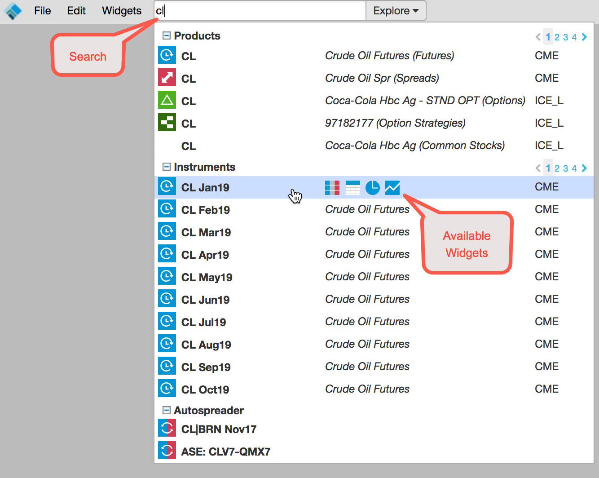
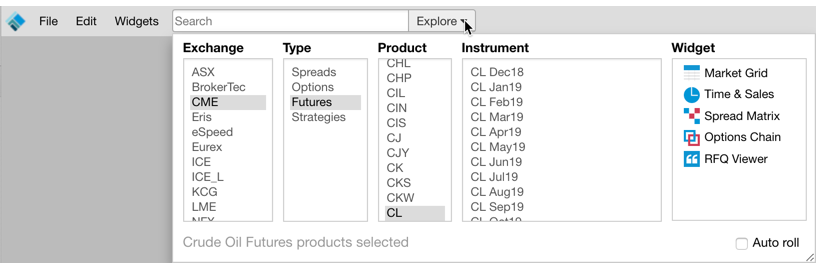
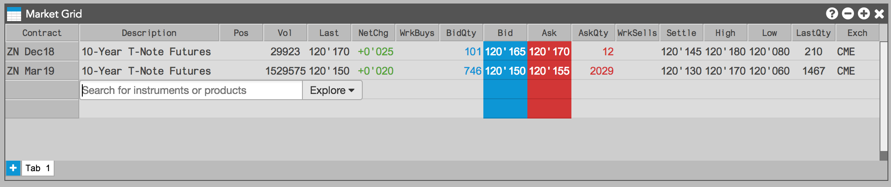
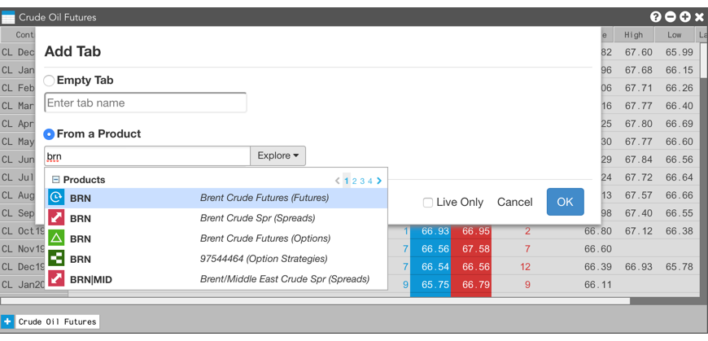

The same workspace management capabilities in X_TRADER are also provided on the TT platform. X_TRADER workspaces cannot be reused on TT, but they can be rebuilt in TT using the same workspace functionality and are accessible from any device that can connect to the Internet. On TT, Workspaces are created, opened, and managed using the TT home page, which is the landing page after you log in to the platform.
From within an open workspace, you also have access to the same workspace management capabilities by using the File menu on the Workspace menu bar.

Workspaces can also be shared in TT:
The following terms are used in this article:
On TT, you have access to your workspaces from any device that can connect to the Internet to log in to the platform. On the X_TRADER platform, you have to manually copy your workspace files from one workstation and paste these files on another X_TRADER workstation in order to access your workspaces from a different machine.
The main difference between creating a workspace in X_TRADER and TT is that:

You can add a widget to the workspace as follows:
To add a widget to the workspace in TT, click on the widget name in the Widgets menu on the workspace menu bar. An icon for each widget is also displayed in the menu.

The X_TRADER Market Explorer window allows you to select one or more instruments, spreads and strategies across multiple exchanges and launch windows containing those instruments. You can also drag instruments from the Market Explorer and drop them into existing windows to add those instruments to the display.
On TT, widgets can also be added to the workspace based on which products and instruments you search for and select using the Search or Market Explorer functionality.
Using the Search in TT, you can find an instrument using contextual search and open it in a widget.

Using Market Explorer in TT, you can find an instrument by exploring available markets and products and open the instrument in a widget.
.
Widgets can be opened with from the right-click context menu of another open widget. For example, you can open Time and Sales from MD Trader for the same instrument, or open a widget as a linked or stand-alone widget from Market Grid.
You can add instruments to widgets from within the widgets themselves. This can be done when you:
Open a new widget from the Widgets menu.

Add a new row to a Market Grid.

Add a new widget tab.
